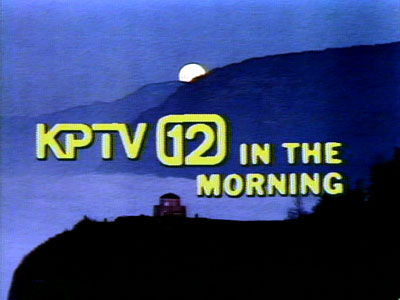
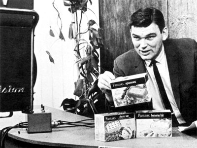
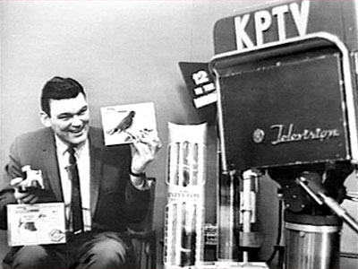
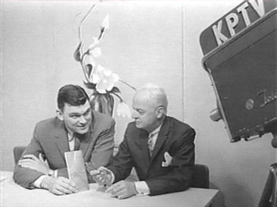
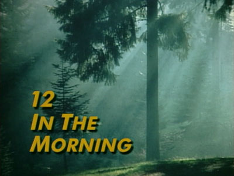
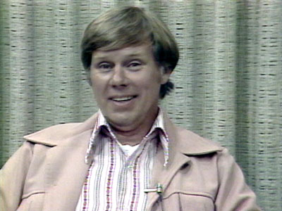
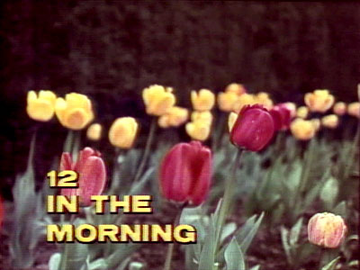
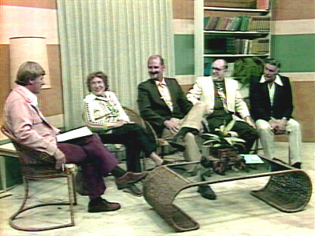
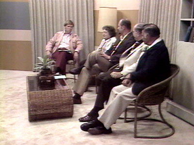
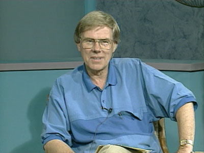

12 in the Morning
July 2, 1964 - September 16, 1995

Opening credits for the show, mid 1970s.
| A long-running public-affairs and
information program, hosted by Gene Brendler
(1960s-1970s) and Rod Anders (1970s -
1990s). |

Gene Brendler makes the pitch for sponsor,
Fantasy Ice
Cream.

Gene Brendler give viewers the bird.

Gene Brendler interviews an unidentified author.






Rod Anders hosted the Saturday
morning version
of the show,
during the 1970s - 1990s.
| 12
in the Morning BROADCAST
HISTORY |
JUL
1964 - SEP 1964: THU 11:00AM-11:45AM
SEP 1964 - MAR 1965:
MON-FRI 11:00AM-12:00PM
MAR 1965 - JUL 1965: MON-FRI 11:00AM-11:30AM
NOV 1965 - JAN 1966: MON-FRI 11:00AM-11:30AM
MAY 1966 - AUG 1967: MON-FRI 11:30AM-12:00PM
SEP 1967 - : MON-FRI 9:30AM-9:45AM
OCT 1967 - JAN 1968: MON-FRI 9:15AM-9:30AM
FEB 1968 - JUN 1968: MON-FRI 10:30AM-10:45AM
DEC 1968 - : MON-FRI
11:30AM-11:45AM
JUN 1969 - : MON-FRI 11:30AM-11:45AM
NOV 1969 - : MON-FRI 11:40AM-11:50AM
OCT 1970 - : MON-FRI 11:15AM-11:30AM
DEC 1971 - : MON-FRI 10:15AM-10:30AM
SEP 1972 - : MON-FRI 10:15AM-10:30AM
MAR 1973 - APR
1973
-
:
MON-THU
10:15AM-10:30AM
APR 1973 - : SAT 8:30AM-9:00AM
AUG 1973 - : SAT 8:30AM-9:00AM
SEP 1973
-
:
SAT
11:00AM-11:30AM
NOV
1973
- DEC 1973:
SAT
11:00AM-11:30AM
FEB
1974
-
NOV
1974
-
:
SAT
10:00AM-10:30AM
1975: SAT 10:00AM-10:30AM
1976 - 1981: SAT 10:30AM-11:00AM
1982 - 1991: SAT 7:00AM-7:30AM
1992 - 1993: SAT 6:30AM-7:00AM
1994: SAT 6:00AM-6:30AM |

  
This
page
last
updated
on
August 23, 2025
|